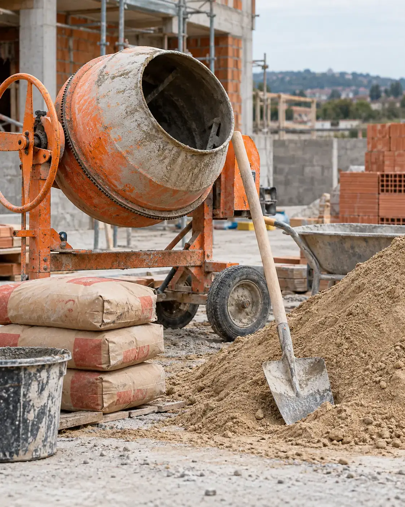
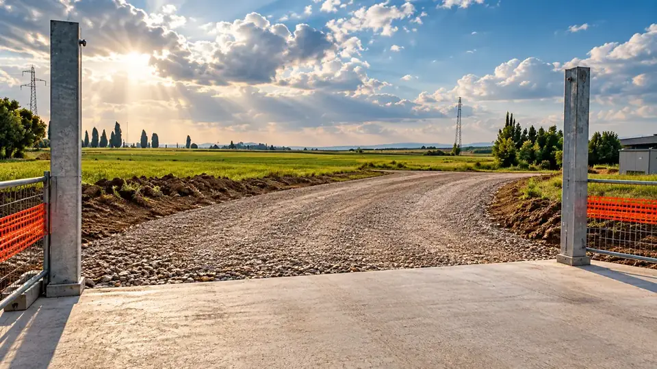
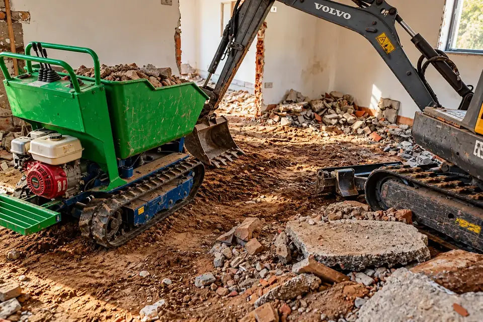

01 / 08
Movimento terra
Ogni opera parte dal terreno. Prepariamo le aree di intervento con scavi, sbancamenti, riporti e livellamenti, studiando prima il luogo per lavorare con precisione e senza sprechi.
Richiedi un sopralluogo
Otto competenze integrate, eseguite con squadra e mezzi propri.
Ogni opera parte dal terreno. Prepariamo le aree di intervento con scavi, sbancamenti, riporti e livellamenti, studiando prima il luogo per lavorare con precisione e senza sprechi.
Richiedi un sopralluogo
Realizziamo le infrastrutture di base che rendono un'area utilizzabile: sottoservizi, reti di raccolta delle acque, percorsi e sistemazioni esterne. Lavori spesso invisibili a fine cantiere, ma da cui dipende tutto il resto.
Richiedi un sopralluogo
Costruiamo e riqualifichiamo strade, piazzali e accessi. Curiamo ogni strato, dal sottofondo alla pavimentazione, e la corretta regimazione delle acque, perché la durata di una strada si decide sotto la superficie.
Richiedi un sopralluogo
Ci occupiamo degli spazi esterni delle abitazioni in ogni contesto, dalla pianura alla montagna: modelliamo il terreno, realizziamo accessi, vialetti e piazzali, pavimentazioni, drenaggi e opere di contenimento.
Richiedi un sopralluogo
Valorizziamo poderi, fabbricati di campagna e proprietà rurali, trovando il giusto equilibrio tra l'uso che ne fa il cliente e le caratteristiche del territorio.
Richiedi un sopralluogo
Prepariamo i terreni e realizziamo le opere civili a servizio degli impianti fotovoltaici, seguendo anche la gestione della vegetazione nel tempo per mantenere l'area in ordine ed efficiente.
Richiedi un sopralluogo
Puliamo e manteniamo boschi e terreni incolti per recuperarne l'accessibilità e prendersi cura del territorio, riducendo anche il rischio legato all'abbandono.
Richiedi un sopralluogo
Pianifichiamo ogni demolizione in base alla struttura e al contesto, con la sicurezza come priorità. Gestiamo i materiali di risulta e consegniamo l'area pronta per la fase successiva.
Richiedi un sopralluogo